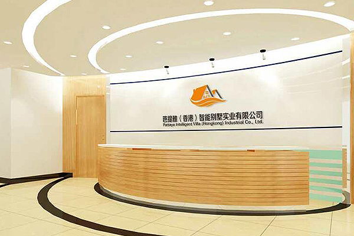

芭提雅（香港）智能别墅实业有限公司，简称B.T.Y，芭提雅在傣语的意思是“祝福你”，同时寓意开心和快乐、博大与恒久。
芭提雅是泰国中南半岛南端的一处著名海景度假胜地，素以阳光、沙滩、海鲜名扬世界，享有“东方夏威夷”之誉，这里更有的著名的东南亚特色建筑----泰式竹楼别墅享誉世界，以至于后来的欧美国家在建筑别墅的过程中都采用了芭提雅竹楼别墅的风格，从而使芭提雅“竹楼别墅”成为世界别墅的延伸。
1979年，B.T.Y.品牌始创于泰国曼谷。B.T.Y公司以建造“竹木结构、标准化、模板化、智能化”拼装别墅为开端，从曼谷蔓延至芭提雅、清迈，并迅速进入国际市场，覆盖新加坡、马来西亚、澳洲、北美、欧洲等全球十余个国家和地区，以其精美的形制设计、精细的施工建造、精诚的服务以及低价高质的建造水平收到了全球市场与业界的广泛赞誉。
2016年，B.T.Y.智能别墅（香港）实业有限公司成立，B.T.Y落地香港，正式进驻中国市场。
经过近几年的研发和试验，成熟的推出符合中国特色的“黑天鹅”系列别墅，主要有佳墅（民宅）系列，雅墅（豪宅）系列，美墅（百变办公、各种会所）系列，艺墅（胶囊酒店、旅游度假产品）系列，四大系列100多种不同风格，不同面积，不同造型的别墅。另外公司将标准化的设计、工厂化的制造、装配化的施工、一体化的装修、信息化的管理应用于建筑产业，将建筑生产所涉及的设计、部品生产、施工、服务、管理以及后续装修等全过程联接为一个完整的产业链。从而实现有效降低行业建设成本，缩短行业建设周期，满足当前社会不同群体对建筑、装修产业的不同需求。